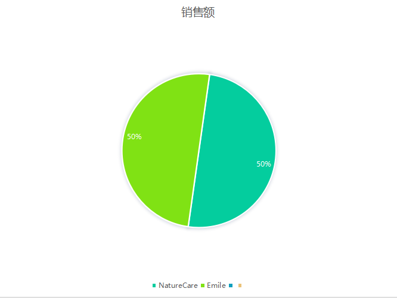
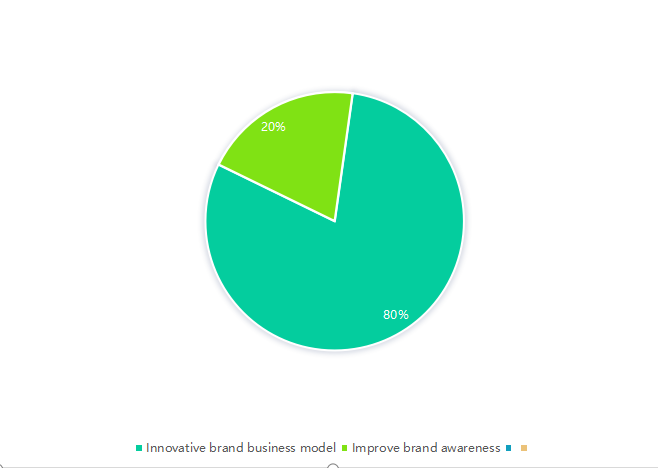
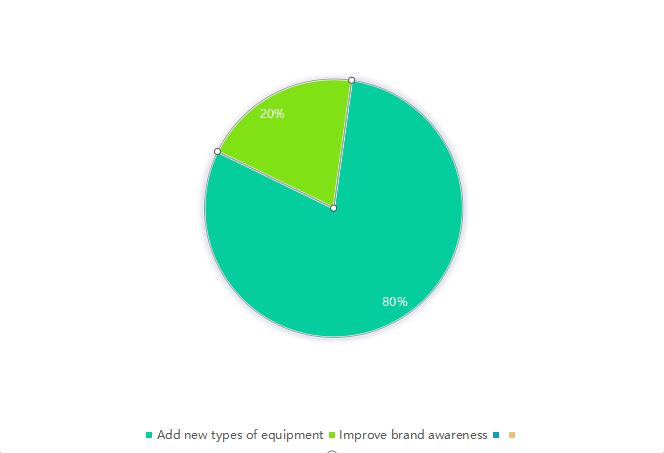

Fifty percent of people like to communicate through NatureCare products and 50 percent like to communicate through emile.

For innovating brand business models and enhancing brand awareness and brand awareness, most people seek to increase brand awareness .

As for whether the company wants to add new equipment, some people think it is necessary to add equipment to better improve work efficiency, while others think it is not necessary to spend most of the money to introduce equipment.